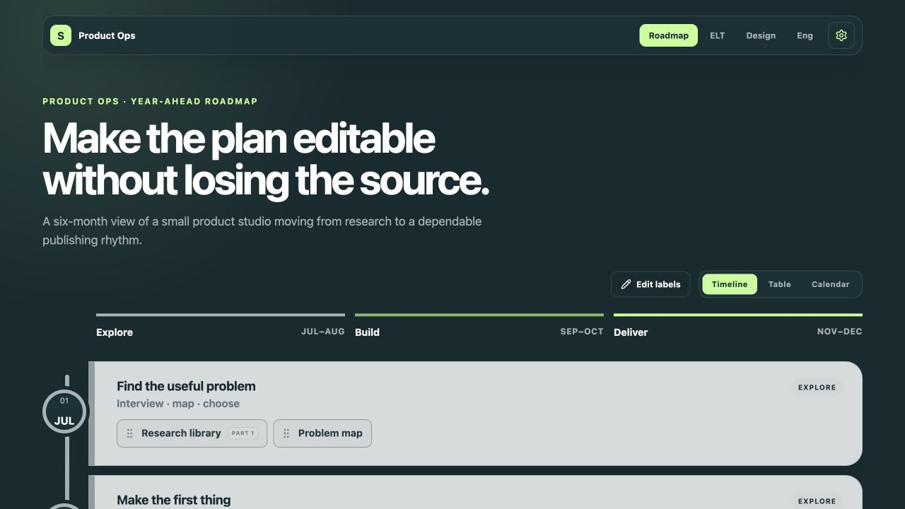
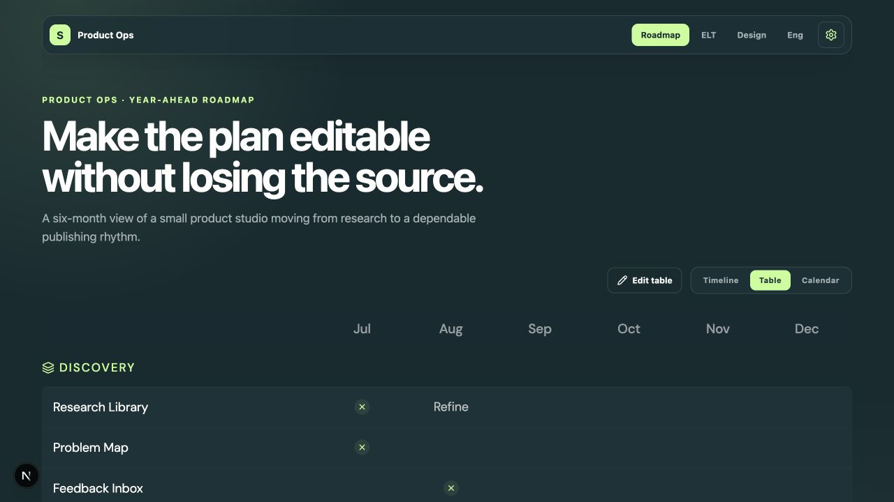
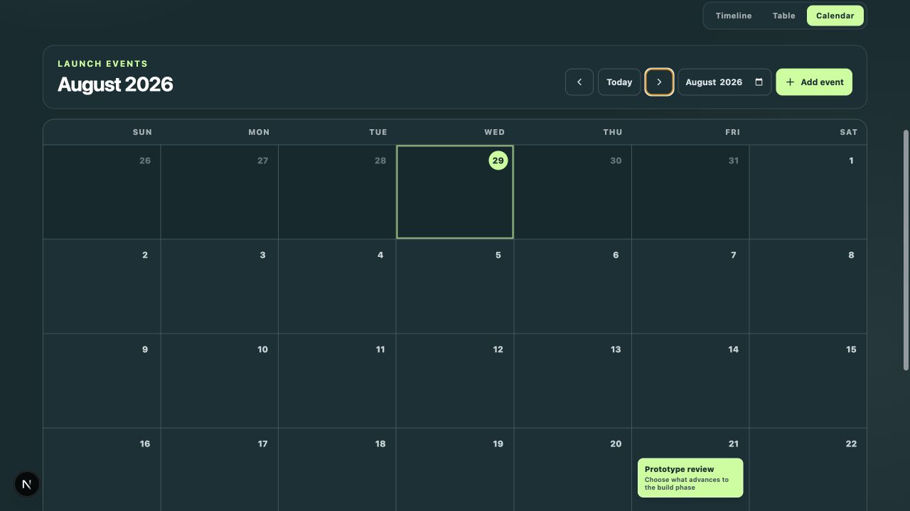

Source
People needed a familiar place to bring roadmap data in and take it back out.
YARM · roadmap systems
A Sheet was a good place to begin. It was a terrible place to hold edits, views, history, and concurrent work.
Real YARM UI · sanitized talk fixture
Micah Alpern · Hacker Dojo

The pressure test
People needed a familiar place to bring roadmap data in and take it back out.
Changes needed validation, conflict handling, and a deliberate save boundary.
Every revision needed an accountable state—not a trail of duplicated tabs.
Timeline, table, and calendar views needed the same facts without the same shape.
Timeline view
The timeline makes sequence, overlap, and phase boundaries legible. It does not pretend that the visual arrangement is the underlying record.
The boundary

Table view
The table is where completeness becomes inspectable: titles, owners, status, dates, and stable IDs remain explicit instead of hiding behind pixels.
Calendar view
Events keep real dates and arbitrary years. The calendar view exposes collisions and quiet weeks without changing the underlying roadmap.

Safety model
| Moment | Tempting shortcut | YARM’s boundary |
|---|---|---|
| Import | Treat the Sheet as a live mirror | Preview, then deliberately replace stored state |
| Edit | Let the last request win | Require the version the editor actually saw |
| History | Overwrite the only copy | Write a revision with every accepted state |
| Presentation | Store layout as truth | Preserve view overrides separately from roadmap facts |
Takeaway
A roadmap is not a picture. It is a versioned argument about time.
YARM · a clear boundary between source, state, and view